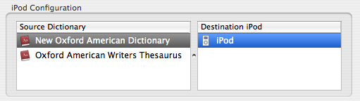
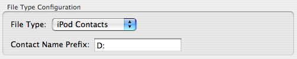
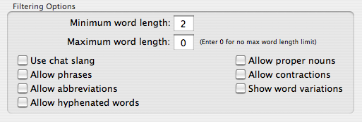
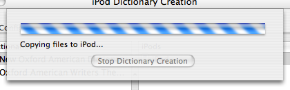

Creating A Dictionary
Using Created Dictionaries
Using a Dictionary on Your iPod
Solving Problems
Choosing a Source and Destination
The first step is to choose the source dictionary (in most cases this is either a dictionary or thesaurus) and the destination iPod.
Simply click on the dictionary you want to use in the "Dictionaries" table, and the iPod you want the dictionary to be copied to in the "iPods" table.

If you don't have your iPod connected to your computer right now, you can create the dictionary now and copy it to your iPod later.File Type Configuration
New in iDictionary version 1.2 is the ability to change the file type of the dictionary that you create.
You can change the file type using the pop-up menu pictured below.

There are two file type options, "iPod Contacts" and "iPod Notes". When using iPod Contacts there is no file limit, but all the dictionary files will appear as contacts and are not organized in any hierarchal fashion. When using iPod Notes the dictionary will be organized in a hierarchal fashion, but there is a file limit of 1000 possible preventing you from viewing both a dictionary and thesaurus.Since Contact files have no hierarchal structure, instead being organized alphabetically, viewing both a dictionary and thesaurus on your iPod in contact file format can be almost impossible. iDictionary provides a way to workaround this problem by prefixing your dictionary and thesaurus files with different strings allowing you to differentiate between the dictionary and thesaurus files in the iPod contacts list. If you want to specify a prefix for your dictionary/thesaurus you can do so using the "Contact Name Prefix" field pictured above.
Choosing Filter Options
Since the iPod has a limited amount of files it can view, iDictionary provides you with a wide array of filtering options that allow you to customize your dictionary to save space by excluding words you dont think you'll need.

The following is a quick description of each option and how it effects dictionary creation:Min Word Length
The minimum word length field allows you to specify a minimum length a word must be to be included in the dictionary. This minimum length must be less than the maximum length.Max Word Length
The maximum word length field allows you to specify a minimum length a word must be to be included in the dictionary. You can specify 0 if you don't want to have a minimum word length. The max word length must be greater than the minimum word length if the max word length is not 0.Use Chat Slang
Uses chat slang shortcuts whenever possible in place of the real words. Heres a table outlining what words are replaced with what shortcuts:| Word | Replacement |
|---|---|
| are | r |
| you | u |
| be | b |
| why | y |
Allow Phrases
Allows words containing spaces to be included in the dictionary. For instance, the word "hidden agenda" is normally excluded from the dictionary, but with 'Allow phrases' checked "hidden agenda" will be included in the dictionary.Allow Abbreviations
Allows words containing periods to be included in the dictionary. For instance, "a.m." is usually excluded from the dictionary, but with 'Allow abbreviations' checked "a.m." will be included in the dictionary. In a future version of iDictionary words that contain all uppercase letters will also be considered abbreviations, but as of now they are not.Allow Hyphenated Words
Allows words containing hyphens to be included in the dictionary. The word "a-frame" is usually excluded from the dictionary, but with 'Allow hyphenated words' checked "a-frame" will be included in the dictionary.Allow Proper Nouns
Allows proper nouns, words starting with an upper-case letter, to be included in the dictionary. The word "Dickens" is usually excluded from the dictionary, but with 'Allow proper nouns' checked "Dickens" will be included in the dictionary.Allow Contractions
Allows contractions, words containing an apostrophe, to be included in the dictionary. The word "wouldn't" would usually be excluded from the dictionary, but with 'Allow contractions' checked "wouldn't" will be included in the dictionary.Show Word Variations
Many words in the dictionary have very similar meanings, iDictionary finds these words and groups them together. For instance, the dictionary definitions for the words "waitpersons", "waitron", "waitrons", and "waitperson" are the same. Without 'Show word variations' selected iDictionary only keeps one of the words to save on space. When 'Show word variations' is checked iDictionary finds a common root between the words to show all the 'word variations'. For example, the 'word variation' version of the words listed above would look like this: wait[persons/ron/rons/person]. In a future version of iDictionary there will be the option to show the word variations, but not list common variations (like ing, and ed).The Create Button
The last step of the process in creating a dictionary for your iPod is very simple, just hit the create button!
If you don't have an iPod connected & chosen, iDictionary will create the dictionary and store it for copying to your iPod at a later time.
If you do have your iPod connected & chosen, iDictionary will create the dictionary (if its not already previously created) and copy it to your iPod's "Notes" folder allowing you to use a dictionary on your iPod!
The following two screenshots show the dictionary being created, and the dictionary being copied to your iPod.

